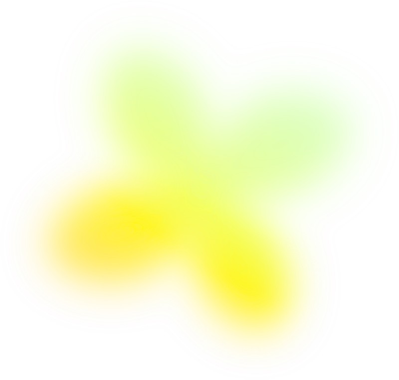

Profil
Hej,
Mitt namn Tuva, 23 år och jag läser just nu mitt sista år på Kommunikation och PR-programmet vid Karlstads universitet
Jag har läst följande kurser som del av min pågående utbildning:
- Kriskommunikation
- Internkommunikation
- Strategisk kommunikation
- Marknadsföring och varumärke
- Opinionsbildning
- Medierätt
- Projektledning och produktion
- Tillämpat skrivande
Program:
Adobe Illustrator, Photoshop, InDesign, Adobe Premier, Framer, Wordpress, CapCut...
